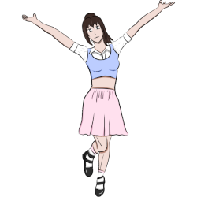
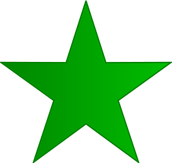
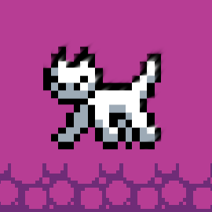

This website needs JS to work properly.
Source code
English
Español
Hi! I'm Autumn64, a
CE major
from México. This is the place where I share my hobbies.
Main activities
Free Software activism

Drawings
Online K-pop radio station

Esperanto blog (under construction)

8-bit style arcade game
Follow me on my social media